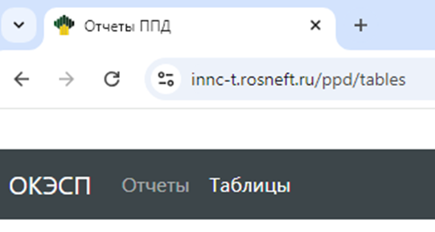
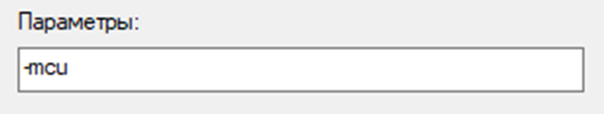

РН-Супра
URL-адрес: https://innc-t.rosneft.ru/ppd
Web-сервис для выгрузки комплексных отчетов в рамках задач, связанных с мониторингом разработки в части ППД, ГДИС и анализа энергетики пласта.
Содержание
1. Общая информация об отчетах
Выгрузка отчетов осуществляется через вкладку «Отчеты» (рис. 1).
Все отчеты делятся на 3 группы:
- использующие данные из локальной БД (
local);
- использующие данные из корпоративной базы СМД (
OFM);
- не требуют подключения ни к одной из БД.
Форматы дат:
- ДД.ММ.ГГГГ - важны день, месяц и год;
- 01.ММ.ГГГГ - не важен день;
- 01.01.ГГГГ - не важен день и месяц.
2. Общая информация о локальной БД (local)
Для первой группы отчетов (local) требуется периодическое обновление данных в локальной БД. Обновление данных осуществляется через вкладку «Таблицы» (рис. 2).

3. Описание отчетов
3.1. Профили добычи/закачки (local)
Выгрузка профилей добычи и закачки на последний ненулевой МЭР и последний информативный ОПП за всю историю скважины.
Внимание: Для использования обновите таблицы в локальной БД:
Параметры для выгрузки:
- Начальная дата - начало периода для поиска последнего ненулевого МЭР (формат 01.ММ.ГГГГ);
- Конечная дата - конец периода для поиска последнего ненулевого МЭР (формат 01.ММ.ГГГГ).
Расшифровка столбцов отчета:
- field - название месторождения;
- well_name - № скважины;
- cid_all - список всех объектов разработки;
- cid - текущий объект разработки;
- dat_rep - дата последнего ненулевого МЭР;
- liq_rate - дебит жидкости по МЭР для текущего cid, умноженный на 1/num_layer;
- inj_rate - приемистость по МЭР для текущего cid, умноженная на 1/num_layer;
- liq_rate_all - суммарный дебит жидкости;
- inj_rate_all - суммарная приемистость по МЭР;
- well_type - характер работы скважины на момент ОПП;
- rec_date - дата ОПП;
- layer - индекс пласта;
- diff_absorp - процент притока/приемистости;
- remarks - комментарии интерпретатора ОПП;
- 1/num_layer - обратная величина от общего количества пластов;
- liq_rate_layer - дебит жидкости для данного пласта layer;
- inj_rate_layer - приемистость для данного пласта layer.
3.2. Количество ОПП за год (OFM)
Количество ОПП по годам с разбивкой по характеру работы скважин, объектам разработки и месторождению в целом.
Параметры для выгрузки:
- Начальная дата - начальный год (формат 01.01.ГГГГ);
- Конечная дата - конечный год (формат 01.01.ГГГГ).
Расшифровка столбцов отчета opp_per_year.xlsx:
- ('field', '') - название месторождения;
- ('reservoir', '') - название объекта (all - суммарно по всем объектам);
- ('well_type', '') - характер работы скважин;
- ('rec_date', '') - год проведения исследования;
- ('well_name', 'size') - количество исследований;
- ('well_name', 'nunique') - количество охваченных исследованием скважин.
Расшифровка столбцов отчета opp_per_well.xlsx:
- field - название месторождения;
- well_name - номер скважины;
- well_type - характер работы скважин;
- rec_date - дата проведения исследования;
- reservoir - название объекта (all - суммарно по всем объектам).
3.3. Потери нефти по базе ГТМ ППД (local)
Расчет изменений дебита нефти по факторам (жидкость и обводненность) по добывающему окружению нагнетательных скважин согласно списку из базы ГТМ ППД: U:/Documents/ИНТЦ/База ГТМ.
Внимание: Для использования обновите таблицы в локальной БД:
- МЭР;
- База ГТМ ППД;
- НС ППД (необязательно, используется для формирования округи, если стоит галочка выбрано);
- Округа (необязательно, используется, если нет данных в НС ППД или если стоит галочка не выбрано);
- НС НФ (необязательно, справочная информация о последнем ГТМ НФ)
Параметры для выгрузки:
- Начальная дата - начало периода расчета по МЭР (формат 01.ММ.ГГГГ);
- Конечная дата - конец периода расчета по МЭР (формат 01.ММ.ГГГГ);
- Режим выгрузки:
- Qн на начало периода: при расчете потерь Qн в качестве стартовой точки берется первый ненулевой Qн по МЭР в интервале [Начальная дата; Конечная дата];
- Максимальный Qн: при расчете потерь Qн в качестве стартовой точки берется максимальный Qн по МЭР в интервале [Начальная дата; Конечная дата];
- Конечная точка во всех режимах соответствует Qн на дату Конечная дата; если МЭР отсутствует на эту дату, то условно считается, что Qн равен 0 т/сут.
- Округа из НС ППД:
- выбрано - приоритет отдается округе из таблицы НС ППД (для последнего ГТМ по скважине); если ее нет или она пустая, то окружение берется из таблицы Округа в локальной БД;
- не выбрано - округа берется только из таблицы Округа в локальной БД.
Расшифровка столбцов отчета:
- field - название месторождения;
- well - № скважины;
- dat_rep - дата последней ненулевой закачки по МЭР;
- reservoir - объект разработки на дату dat_rep;
- reservoir_all - все объекты разработки на дату dat_rep;
- gtm_date - последний ГТМ ППД;
- gtm_group - группа ГТМ ППД;
- neighbs - номер соседней добывающей скважины;
- gtm_name - последний ГТМ НФ;
- vnr_date - дата последнего ГТМ НФ;
- start_inj_date - дата первой ненулевой (или максимальной) закачки в интервале [Начальная дата; Конечная дата];
- start_inj_rate - приемистость на дату start_inj_date;
- end_inj_date - дата Конечная дата;
- end_inj_rate - приемистость на дату end_inj_date;
- start_prod_date - дата первой ненулевой (или максимальной) добычи нефти в интервале [Начальная дата; Конечная дата];
- start_oil_rate - дебит нефти на дату start_prod_date;
- start_liq_rate - дебит жидкости на дату start_prod_date;
- start_watercut - обводненность на дату start_prod_date;
- end_prod_date - дата Конечная дата;
- end_oil_rate - дебит нефти (либо 0) на дату end_prod_date;
- end_liq_rate - дебит жидкости (либо 0) на дату end_prod_date;
- end_watercut - обводненность (либо 0) на дату end_prod_date;
- dW - изменение приемистости на даты end_inj_date и start_inj_date;
- dQoil - изменение дебита нефти на даты end_prod_date и start_prod_date;
- dQoil(dQliq) - изменение дебита нефти из-за изменения дебита жидкости на даты end_prod_date и start_prod_date;
- dQoil(dWcut) - изменение дебита нефти из-за изменения обводненности на даты end_prod_date и start_prod_date;
- neighbs_loss_all - окружение с соответствующим значением изменения дебита нефти (суммарным по всем объектам);
- neighbs_loss_liq - окружение с соответствующим значением изменения дебита нефти из-за изменения дебита жидкости (суммарным по всем объектам);
- neighbs_loss_wcut - окружение с соответствующим значением изменения дебита нефти из-за изменения обводненности (суммарным по всем объектам).
3.4. Эффект ГТМ ППД по матрице (local)
Расчет параметров для заполнения матрицы согласно ЛНД ЗАО «ИННЦ» П1-01.03 М-0147 ЮЛ-030 «Анализ эффективности геолого-технических мероприятий на фонде нагнетательных скважин в рамках мониторинга и управления заводнением».
Внимание: Для использования обновите таблицы в локальной БД:
- МЭР;
- НС ППД (необязательно, если используется Список скважин, то игнорируется);
- НС НФ
Параметры для выгрузки:
- Начальная дата – начало периода расчета ГТМ ППД (формат ДД.ММ.ГГГГ);
- Конечная дата – конец периода расчета ГТМ ППД (формат ДД.ММ.ГГГГ);
- На дату МЭР (необязательно) – отчетный период формирования матрицы;
- Базовый период (необязательно, по умолчанию 1) – количество месяцев до даты ГТМ ППД (больше 0);
- Прогнозный период (необязательно) – количество месяцев после даты ГТМ ППД включительно (больше 0);
- Исключаемые ГТМ НФ – исключаемые мероприятия на НФ в прогнозном периоде для формирования базовой округи;
- Список скважин (необязательно) – файл с пользовательским списком скважин для расчета.
Внимание: Хотя бы один из параметров На дату МЭР или Прогнозный период должен быть заполнен.
Пример файла Список скважин
Расшифровка столбцов отчета:
- field - название месторождения;
- well - № скважины;
- reservoir - объект разработки;
- gtm_date - дата ГТМ ППД;
- gtm_description - описание ГТМ ППД;
- gtm_group - группа ГТМ ППД;
- gtm_problem - проблемность ГТМ ППД;
- neighbs - соседняя добывающая скважина;
- reservoir_all - все объекты разработки;
- date_base - базовая дата (дата ГТМ ППД минус Базовый период);
- date_pred - базовая и прогнозная даты, т.е. даты в интервале [дата ГТМ ППД - Базовый период; дата ГТМ ППД + Прогнозный период - 1];
- num_pred - разница в месяцах даты date_pred относительно даты ГТМ ППД;
- gtm_name - наименование ГТМ НФ;
- delete_gtm - относится ли gtm_name к списку Исключаемые ГТМ НФ;
- neighbs_base - соседняя добывающая скважина за исключением тех, на которых был проведен ГТМ из списка Исключаемые ГТМ НФ;
- base_inj_rate - приемистость на дату date_base;
- base_water - закачка на дату date_base;
- base_cum_water - накопленная закачка на дату date_base;
- pred_inj_rate - приемистость на дату date_pred;
- pred_water - закачка на дату date_pred;
- pred_cum_water - накопленная закачка на дату date_pred;
- base_oil_rate - дебит нефти на дату date_base;
- base_liq_rate - дебит жидкости на дату date_base;
- base_watercut - обводненность на дату date_base;
- base_liquid_res - добыча жидкости в пластовых условиях на дату date_base;
- base_cum_liquid_res - накопленная добыча жидкости в пластовых условиях на дату date_base;
- pred_oil_rate - дебит нефти на дату date_pred;
- pred_liq_rate - дебит жидкости на дату date_pred;
- pred_watercut - обводненность на дату date_pred;
- pred_liquid_res - добыча жидкости в пластовых условиях на дату date_pred;
- pred_cum_liquid_res - накопленная добыча жидкости в пластовых условиях на дату date_pred;
- dQoil - изменение дебита нефти на даты date_pred и date_base;
- dQoil(dQliq) – изменение дебита нефти из-за изменения дебита жидкости на даты date_pred и date_base;
- dQoil(dWcut) – изменение дебита нефти из-за изменения обводненности на даты date_pred и date_base;
- neighbs_loss_all - окружение с соответствующим значением изменения дебита нефти (суммарным по всем объектам);
- neighbs_loss_liq - окружение с соответствующим значением изменения дебита нефти из-за изменения дебита жидкости (суммарным по всем объектам);
- neighbs_loss_wcut - окружение с соответствующим значением изменения дебита нефти из-за изменения обводненности (суммарным по всем объектам).
Примечание: Выражение Прогнозный период - 1 при расчете date_pred возникает из-за того, что дата ГТМ ППД считается началом прогнозного периода.
3.5. Потери нефти по НФ (local)
Расчет изменений дебита нефти по факторам (жидкость и обводненность) по всему добывающему фонду скважин и закачки по всему нагнетательному фонду скважин, у которых были ненулевые МЭР за выбранный период времени.
Внимание: Для использования обновите таблицы в локальной БД:
- МЭР;
- НС НФ (необязательно, справочная информация о последнем ГТМ НФ)
Параметры для выгрузки:
- Начальная дата - начало периода расчета по МЭР (формат 01.ММ.ГГГГ);
- Конечная дата - конец периода расчета по МЭР (формат 01.ММ.ГГГГ);
- Режим выгрузки:
- Qн на начало периода: при расчете потерь Qн в качестве стартовой точки берется первый ненулевой Qн по МЭР в интервале [Начальная дата; Конечная дата];
- Максимальный Qн: при расчете потерь Qн в качестве стартовой точки берется максимальный Qн по МЭР в интервале [Начальная дата; Конечная дата];
- Конечная точка во всех режимах соответствует Qн на дату Конечная дата; если МЭР отсутствует на эту дату, то условно считается, что Qн равен 0 т/сут.
Расшифровка столбцов отчета:
- field - название месторождения;
- well - № скважины;
- reservoir - объект разработки на последний МЭР;
- start_dat_rep - дата первого ненулевого (или максимального) МЭР в интервале [Начальная дата; Конечная дата];
- start_oil_rate - дебит нефти на дату start_dat_rep;
- start_liq_rate - дебит жидкости на дату start_dat_rep;
- start_watercut - обводненность на дату start_dat_rep;
- start_inj_rate - приемистость на дату start_dat_rep;
- end_dat_rep - дата Конечная дата;
- end_oil_rate - дебит нефти (либо 0) на дату end_dat_rep;
- end_liq_rate - дебит жидкости (либо 0) на дату end_dat_rep;
- end_watercut - обводненность (либо 0) на дату end_dat_rep;
- end_inj_rate – приемистость на дату end_dat_rep;
- vnr_date -дата последнего ГТМ НФ;
- reservoir_after - объект последнего ГТМ НФ;
- gtm_name - последний ГТМ НФ;
- dW - изменение приемистости на даты end_dat_rep и start_dat_rep;
- dQoil - изменение дебита нефти на даты end_dat_rep и start_dat_rep;
- dQoil(dQliq) – изменение дебита нефти из-за изменения дебита жидкости на даты end_dat_rep и start_dat_rep;
- dQoil(dWcut) – изменение дебита нефти из-за изменения обводненности на даты end_dat_rep и start_dat_rep.
3.6. Контуры ФНВ (OFM)
Выгрузка контуров фронта нагнетаемой воды для загрузки в РН-КИН.
Внимание: При выгрузке ФНВ для всех месторождений время работы может достигать ~20 мин.
Параметры для выгрузки:
- Минимальный радиус - минимальный радиус ФНВ для отрисовки;
- Выбор месторождения - выбор одного или всех месторождений для выгрузки ФНВ;
- Альтернативная БД:
- выбрано - построение ФНВ с учетом перфораций НЛД;
- не выбрано - построение ФНВ согласно только официальной отчетности по перфорациям.
Формат выходных файлов:
- папка с названием месторождения:
- fnv.log: лог с подробной информацией о расчете ФНВ для каждой скважины месторождения;
- файлы в формате [Объект]_[Индекс пласта].txt: контуры ФНВ для загрузки в РН-КИН.
- если при выгрузке по одному из месторождений возникнет непредвиденная ошибка, то в корневой папке появится файл с логом fnv.log (при нормальной работе файл будет отсутствовать).
3.7. Шаблон для матбаланса (РН-КИН) (OFM)
Шаблон для автоадаптации параметров матбаланса в модуле РН-КИН.
Параметры для выгрузки:
- Выбор месторождения - выбор месторождения для расчета;
- Выбор объекта - выбор одного или несколько объектов для расчета;
- Список скважин (необязательно) – файл со списком скважин, для которых требуется расчет; если не указан, то расчет производится для объекта в целом;
- Замеры Рпл (необязательно) – файл с замерами Рпл на определенную дату; обычно используют среднее давление по ТР;
- Альтернативная БД - источник МЭР.
Пример файла Список скважин
Пример файла Замеры Рпл
Формат выходных файлов:
В результате выгружается шаблон в формате Excel, в котором через надстройку «Поиск решения» можно автоматически подобрать параметры матбаланса:
- проницаемость ближней зоны;
- проницаемость дальней зоны;
- объем аквифера;
- коэффициент эффективной закачки.
3.8. Пролонгация эффекта ППД по ХВ
Пролонгация фактического эффекта от переводов в ППД на 5 лет с выводом на плановые цифры по дополнительной добыче нефти и жидкости.
Параметры для выгрузки:
- ДД план - плановая дополнительная добыча нефти по каждой скважине ППД в формате Excel;
- ДД факт - набор файловых отчетов по каждой скважине ППД в формате модуля РН-КИН «Оценка эффективности ГТМ» в виде zip-архива;
- Метод интерполяции - алгоритм пролонгации факта с выводом на план; рекомендуется метод PCHIP. По умолчанию строится по всем доступным методам.
Внимание: При создании архива отчетов из РН-КИН рекомендуется использовать программу 7-Zip. При этом обязательно установите значение параметров как на рисунке ниже (это позволит выбрать правильную кодировку для кириллицы в названии файла отчета).

Пример файла ДД план
Совет: Значение столбца Нефть (1 год) (или Жидкость (1 год)) может быть пустым, т.е. вывод на план будет происходить только для значения Нефть (5 лет) (или Жидкость (5 лет)).
Расшифровка столбцов отчета:
- field - название месторождения;
- well - № скважины;
- date -дата перевода в ППД;
- fluid - нефть или жидкость;
- method - метод интерполяции;
- 0..60 – значение дополнительной добычи на соответствующий номер месяца.
3.9. Выгрузка исходников для ММБ (Julia) (OFM)
Исходники для работы модуля многоблочного материального баланса.
Параметры для выгрузки:
- Параметры блоков - файл с параметрами блоков: начальные запасы нефти, начальная водонасыщенность, связи между блоками и т.п.;
- Альтернативная БД - источник МЭР.
Пример файла Параметры блоков
Формат выходных файлов:
- tank_params.csv - файл с параметрами блоков с диапазоном их варьирования;
- tank_prod.csv - файл с историей добычи и закачки внутри блока, замерами Рпл и Рзаб и т.п.
3.10. Выгрузка для компенсаций (OFM)
Выгрузка для обновления шаблона с целевой компенсацией по объектам месторождений: U:\Documents\ИНТЦ\Model2\Отдел мониторинга разработки\Группа управления заводнением\!ППД\_Компенсации\Компенсации целевые сводная.xlsm
Параметры для выгрузки:
- На дату - дата МЭР, на которую требуется посчитать текущую компенсацию по объектам месторождений.
Расшифровка столбцов отчета:
- field - название месторождения;
- district - название поднятия;
- reservoir - название объекта разработки;
- oil_fvf - объемный коэффициент;
- type - характер работы скважины;
- well - номер скважины;
- date - дата МЭР;
- water - закачка воды;
- oil - добыча нефти;
- days - число дней в работе.
3.11. Отчет по ГДИС (local+OFM)
Выгрузка проведенных ГДИС, ГТМ и соседних ГДИС для итогового заключения ИННЦ.
Параметры для выгрузки:
- Отчет Сиам - файл с отчетом по ГДИС в формате Сиам;
- Период ГТМ (мес) – максимальная период проведения ГТМ до даты окончания ГДИС;
- Период ГДИС (лет) - максимальная период проведения ГДИС на соседних скважинах до даты окончания ГДИС;
- Радиус - максимальное расстояние до соседней скважины с ГДИС.
Внимание: Для использования обновите таблицы в локальной БД:
- НС ППД (необязательно, для информации о проведенных ГТМ);
- НС НФ (необязательно, для информации о проведенных ГТМ);
- Аналитика ГДИС
Формат выходных файлов:
В результате выгружается шаблон в формате Excel с информацией о прошлых ГДИС и ГТМ, а также замеры Рпл на соседних скважинах.